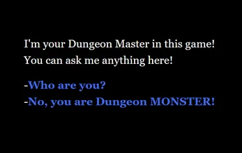
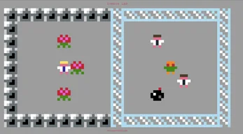
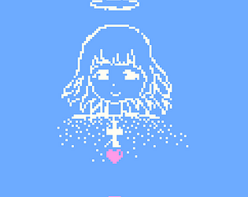
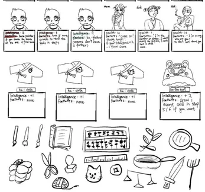
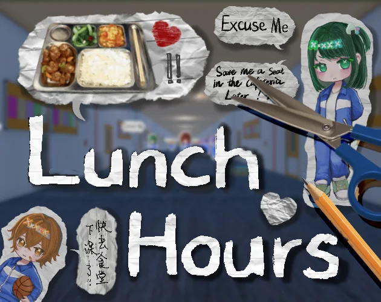
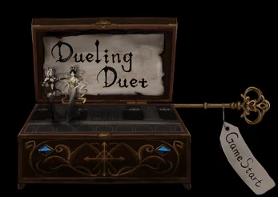
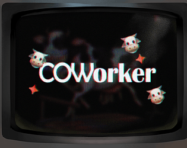
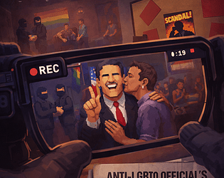
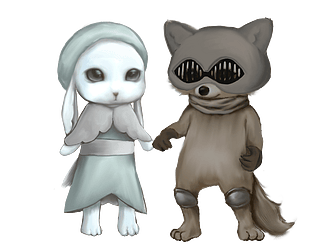
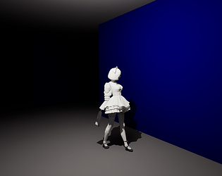

Game-Based Learning & Educational Technology
How can game systems, spatial environments, and assessment structures support meaningful learning without reducing play to a reward layer?
M.S. Student in Game Science and Design
Northeastern University
Selected Case Studies
Research- and design-oriented work across game-based learning, playtesting, educational platforms, and child-centered activity design.
A cross-disciplinary AI platform that transforms multilevel course materials into interactive 3D game-based learning experiences.
Playtesting observation and qualitative feedback synthesis for a 3D astronomy learning game focused on representational competencies.
A Moodle-based educational platform providing psychology, game design, and interactive media learning resources for Chinese-speaking students.
A Montessori-informed learning activity developed from observations of preschool children’s visual attention, symbolic association, and interaction with materials.
Questions & Directions
Research interests grounded in psychology, game design, learner observation, and the design of interactive educational experiences.
How can game systems, spatial environments, and assessment structures support meaningful learning without reducing play to a reward layer?
How do choices, constraints, feedback, and narrative framing shape emotional engagement and players’ interpretations of agency?
How can developmentally appropriate interaction design build on children’s attention, symbolic thinking, social behavior, and self-directed exploration?
How can AI-supported learning systems remain understandable, responsive, and grounded in observable learner needs and behavior?
Games & Prototypes
Games, prototypes, and interactive experiments created independently and in collaborative teams.
Solo Developer
Solo Developer
Solo Developer

Personal Project

Personal Project

Personal Project
Mature-content notice
Personal Project
2D Artist / Visual Asset Creator

Game Designer & 2D Artist

Game Designer & 2D Artist

Game Designer & 2D Artist
18+ content gate
Game Designer & 2D Artist
18+ content gate
2D Artist & Character Designer

Game Designer & 3D Artist
Curriculum Vitae
Get in Touch